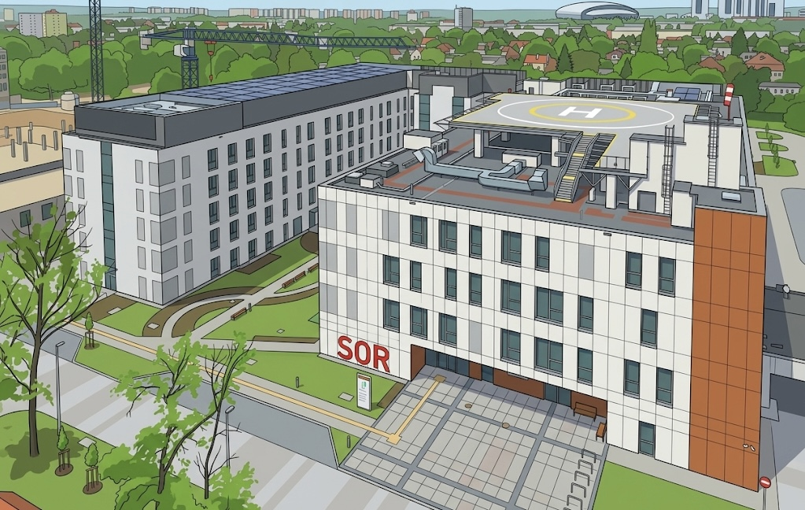
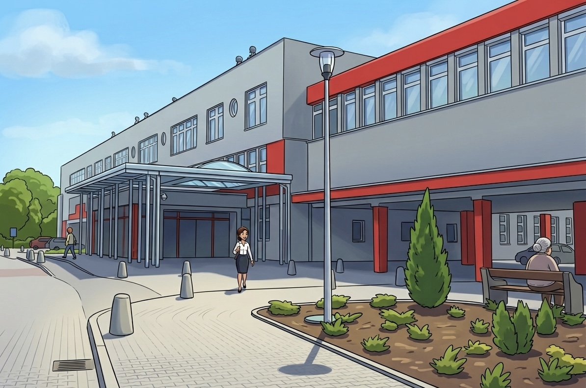
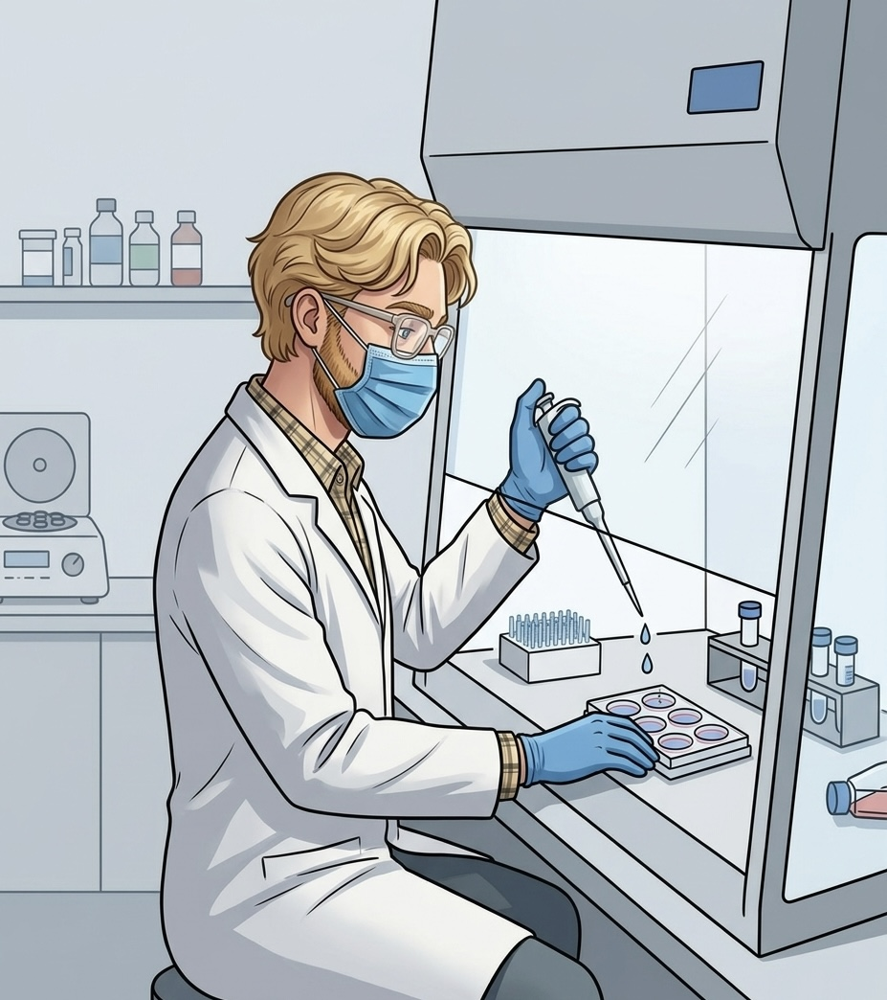
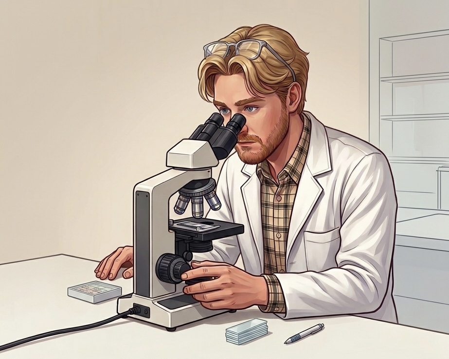
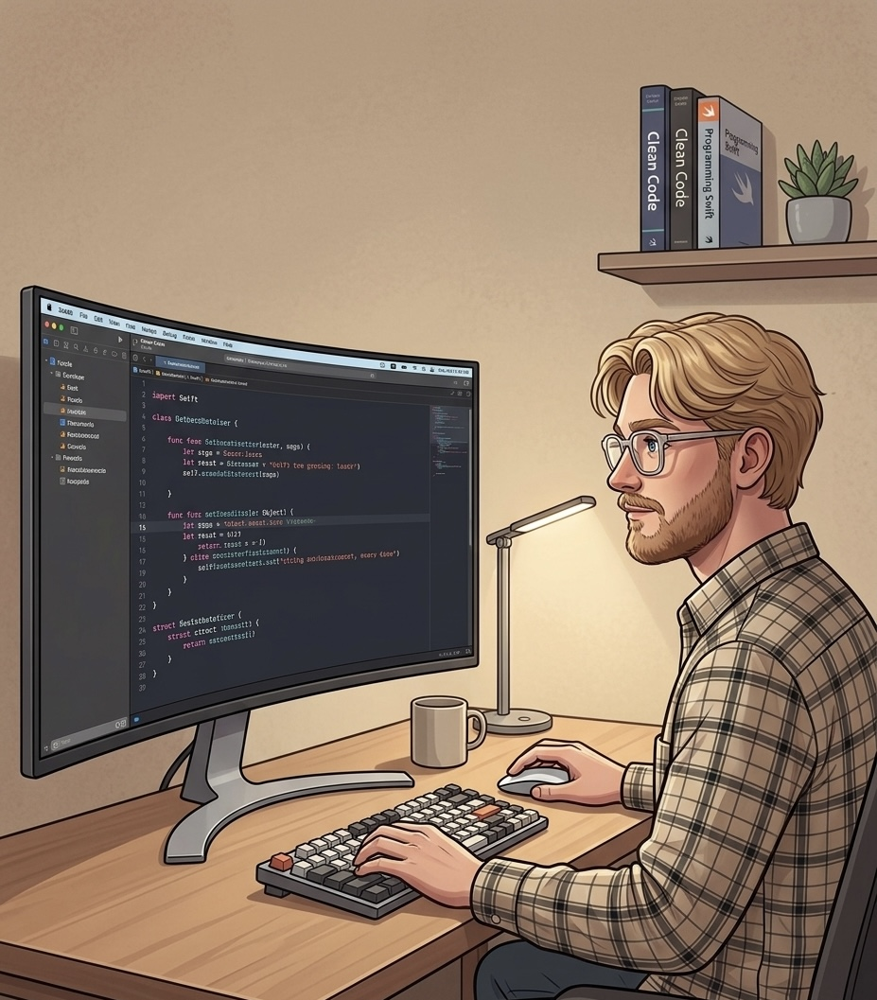
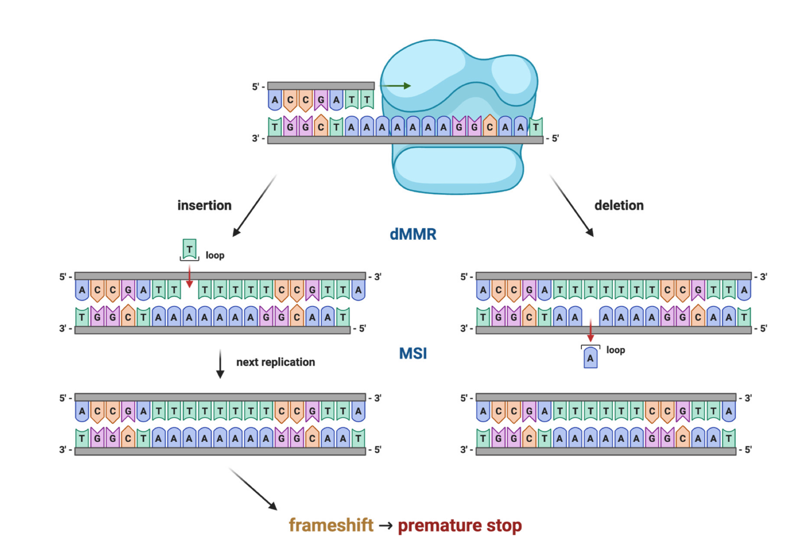
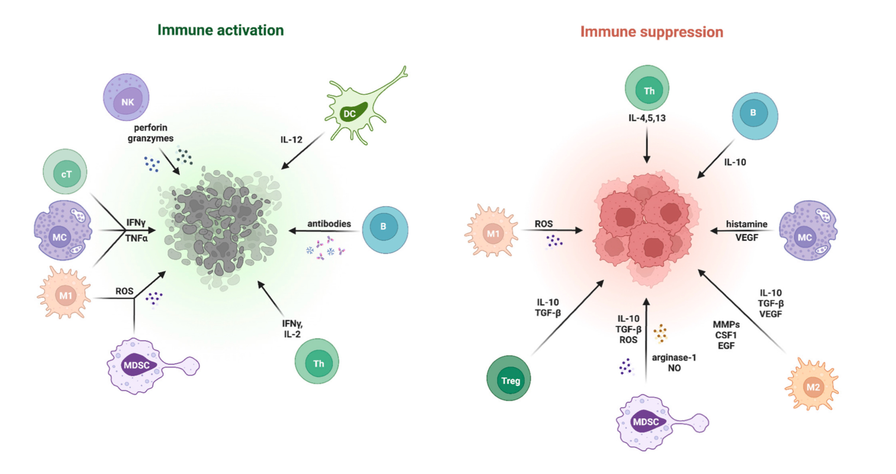

Bone Marrow Assessment
Pre-screening bone marrow trephine biopsies, assisting with pathology reports and developing practical skills in histopathology slide review using H&E and immunohistochemistry.
Medical Student
Pre-screening bone marrow trephine biopsies, assisting with pathology reports and developing practical skills in histopathology slide review using H&E and immunohistochemistry.
Annotating CD138-positive plasma cells, CD79a-positive B cells, CD56-positive natural killer cells and CD15+ myeloid cells on scanned histopathology slides, with a focus on artificial intelligence support in pathology.
Contributing to research projects, preparing manuscript sections, creating scientific figures and presenting work at conferences in pathology and clinical medicine.
Poznan University of Medical Sciences, Poznan, Poland
From 2020 to Present
Faculty of Medicine
Doctor of Medicine Candidate
4th year completed
From Feb 2025 to Dec 2025
Laboratory Assistant, Consilio Diagnostica Poznań
Rzemieślnicza 54, 62-081 Przeźmierowo, Poland
From Aug 2023 to Nov 2024
Medical Assistant, Specialist Mother & Child Health Care Center
Wrzoska 1, 60-663 Poznań, Poland
From Aug 2022 to Sep 2023
Trainee Medical Assistant, Specialist Mother & Child Health Care Center
Wrzoska 1, 60-663 Poznań, Poland
From Apr 2025 to Present
MedART Infertility Diagnosis and Treatment Center, Poznań, Poland
From Jan 2025 to Present
Prof. Grzegorz Dworacki’s team
Department of Pathomorphology and Clinical Immunology
Poznan University of Medical Sciences, Poznań, Poland

From Jul 2024 to Apr 2025
Neurosurgical ward
Department of Pediatric Surgery, Traumatology and Urology
Jonscher Clinical Hospital, Poznań, Poland
Clinical observership supervised by Natalia Retkowska-Tomaszewska, MD

Wet lab

Pathology

Data & programming

Derived an AJCP-concordant formula for marrow normocellularity based on published data
Manuscript accepted
Ślężak JK, Dworacki G. Beyond the “100-age” rule: an AJCP-concordant formula for marrow normocellularity. Am J Clin Pathol. Correspondence
Co-authored the chapter “Genetic and Molecular Basis of Lynch Syndrome” and created a figure using BioRender
Kluk A, Gryczka H, Braszka M, Ałtyn R, Markiewicz H, Ślężak J, Dwojak E, Czerniak J, Zieliński P, Płachno BJ, Dobosz P. Unmasking Hereditary Risk: Lynch Syndrome and Beyond in Endometrial Cancer. A comprehensive review with clinical and laboratory guidelines. Int J Mol Sci. 2026;27(3):1304. doi:10.3390/ijms27031304

Prepared the chapters “Immunosuppressive vs. Immunostimulatory Factors” and “Application to Specific Types of Breast Cancer”, developed figures using BioRender, and formatted the bibliography
Dmuchowski B, Hryniewicz WW, Barczak I, Fręśko K, Szarzyńska Z, Węclewski H, Ślężak JK, Dobosz P, Gryczka H. Breaking Barriers: Immune Checkpoint Inhibitors in Breast Cancer. Pharmaceutics. 2026;18(1):34. doi:10.3390/pharmaceutics18010034

Prepared the chapter: Introduction and “Inflammatory bowel diseases and fatty liver”
Kowalska WM, Ślężak JK, Nawrocka W, Pieczykolan J, Gruba D, Gimel ZM, Dobrowolska A, Zawada A. Metabolic and cardiovascular disorders in patients with inflammatory bowel diseases. Farmacja Współczesna. 2024;17:159-164. doi:10.53139/FW.20241718
Performed supervised cell culture of MCF7, MDA-MB-231, and SK-BR-3
Mizielska A, Dziechciowska I, Szczepański R, Cisek M, Dąbrowska M, Ślężak J, et al. Doxorubicin and Cisplatin Modulate miR-21, miR-106, miR-126, miR-155 and miR-199 Levels in MCF7, MDA-MB-231 and SK-BR-3 Cells That Makes Them Potential Elements of the DNA-Damaging Drug Treatment Response Monitoring in Breast Cancer Cells-A Preliminary Study. Genes (Basel). 2023 Mar 12;14(3):702. doi:10.3390/genes14030702
English
B2-C1
German
A1
Sep 2025
European Society for Clinical Cell Analysis Conference
Montpellier, France
Poster presentation: How does flow cytometry of cerebrospinal fluid and peripheral blood help diagnose primary CNS lymphoma
May 2025
Lifestyle Medicine for Longevity, Blue Zones - Inspirations
Poznań, Poland
Volunteered at the international conference
Apr 2025
SCALPELLUM: 4th National Student Conference on Pediatric Surgery
Olsztyn, Poland
Oral presentation: Abusive Head Trauma in an Infant - Diagnostic Significance of Ocular Fundus Examination: A Case Report

Dec 2024
Neurooncology, Greater Poland Days of Neurology and Neurosurgery
Poznań, Poland
Co-author of oral presentation: Modern approaches to the treatment of diffuse gliomas: therapeutic strategies for grade I, III, and IV tumors
Nov 2024
8th Greater Poland Meeting of Pediatric Surgeons with Pediatricians and Family Physicians
Ostrów Wielkopolski, Poland
Oral presentation: Rare case of arteriovenous malformation in a newborn

Sep 2024
“Hospital Challenge” Conference, Specialist Mother & Child Health Care Center
Poznań, Poland
Attendee
May 2024
SCALPELLUM: 3rd National Student Conference on Pediatric Surgery
Olsztyn, Poland
Oral presentation: Vomiting in infants as a potential sign of brain disorders: a case report

Nov 2023
7th Greater Poland Meeting of Pediatric Surgeons with Pediatricians and Family Physicians
Ostrów Wielkopolski, Poland
Oral presentation: CSMD3 gene c.1075G>T variant in two children aged 3 and 7

Jan 2026
PathElective, Online Certified Course
Genitourinary Pathology: Prostate and Seminal Vesicles

Jan 2026
PathElective, Online Certified Course
Hematopathology: Malignant Entities in Blood & Bone Marrow

Dec 2025
PathElective, Online Certified Course
Hematopathology: Benign Entities in Blood and Bone Marrow